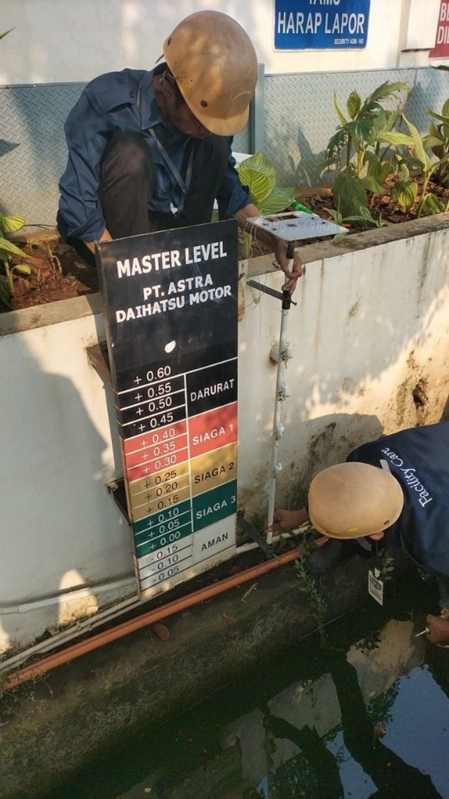
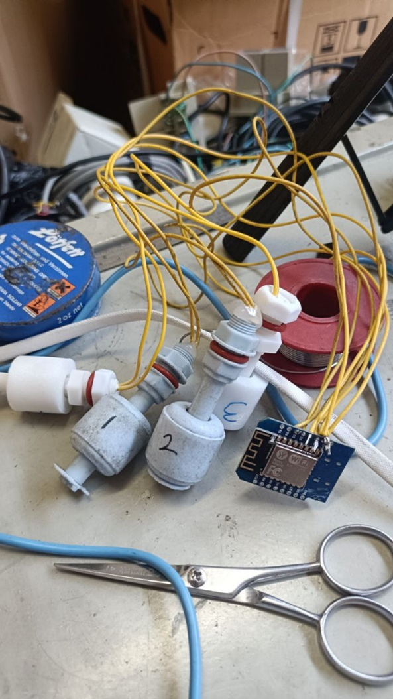
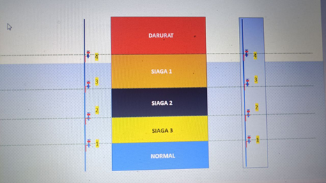

About
An Electrical Engineer specializing in IoT systems, automation, and data-driven monitoring solutions.
Experienced in designing and developing end-to-end systems starting from hardware integration (sensors and microcontrollers),
data transmission over network, cloud-based storage, and real-time analytics dashboards.
Focused on transforming conventional manual processes into efficient, automated, and scalable digital systems.
Strong experience in integrating IoT devices (ESP8266, sensors), backend systems (Google Apps Script, Google Sheets),
and visualization tools (Power BI) into a unified operational platform.
Key strengths include system integration, automation design, and building practical low-cost solutions
with high operational impact in real-world environments.
For detailed projects, please click on the sections below:
Projects
⚡ Energy Monitoring System
⚡ Energy Monitoring System
Overview:
An IoT-based electrical energy monitoring system designed to capture and analyze real-time
electrical parameters across distribution panels (LVMDP and sub-panels).
This system was fully designed and developed independently, covering hardware integration,
data transmission, and dashboard analytics.
Objectives:
- Enable real-time monitoring of energy consumption
- Reduce electrical energy waste
- Provide historical data for analysis and optimization
System Architecture:
- PZEM-004T → measures voltage, current, power, and energy (kWh)
- ESP8266 (Wemos) → handles serial communication and WiFi transmission
- Google Apps Script → acts as API endpoint
- Google Sheets → serves as centralized database
- Power BI → data visualization and analytics dashboard
Data Flow:
- Sensors capture electrical parameters in real-time
- ESP8266 sends data via HTTP requests
- Data is logged into Google Sheets
- Power BI automatically updates dashboard visualization
Key Value:
- Fully self-developed end-to-end system (hardware to analytics)
- Low-cost IoT implementation
- Real-time monitoring capability
- Supports data-driven energy efficiency decisions
🌊 Flood Early Warning System (EWS)
🌊 Flood Early Warning System (EWS)
Overview:
An IoT-based flood early warning system utilizing multi-level float switches to detect water level changes
and trigger automatic alerts. The system was fully developed independently, covering sensor integration,
cloud logging, and multi-platform notification.
Objectives:
- Provide early detection of potential flooding
- Enable real-time alerting without manual monitoring
- Deliver a low-cost and scalable monitoring solution
System Architecture:
- 4 Float Switch sensors (Safe, Alert Level 3, Level 2, Level 1)
- ESP8266 (Wemos D1) as main controller
- Google Sheets as centralized data logging
- Telegram Bot for real-time alert notifications
- WhatsApp Bot for user interaction and status queries
System Flow:
- Water level rises → float switch is triggered
- ESP8266 reads digital input from sensors
- Status is sent to cloud (Google Sheets)
- Automatic alerts are triggered via Telegram and WhatsApp
User Accessibility:
- All employees can access real-time flood status via WhatsApp bot
- Users can request water level updates through chat commands
- Significantly improves communication speed and situational awareness
Key Advantages:
- Ultra low-cost implementation (~Rp 120,000)
- Real-time monitoring without delay
- Multi-platform integration (WhatsApp & Telegram)
- Historical data logging for analysis
- Improves operational communication efficiency across employees



🤖 ROBOT GA (General Affairs Automation System)
🤖 ROBOT GA (General Affairs Automation System)
Overview:
An integrated operational platform built on WhatsApp to handle support requests,
abnormalities, and event management in a structured and automated workflow.
The system was fully designed and developed independently, covering bot logic,
data handling, and dashboard integration.
Problems:
- Unstructured manual request handling
- No status tracking system
- No centralized historical data
Solution:
- WhatsApp bot as the main entry point
- Automated ticketing system
- Real-time dashboard monitoring
- Automated notifications and escalation
System Architecture:
- User → WhatsApp
- Bot Engine (Node.js)
- Google Sheets (single source of truth database)
- Web Dashboard (monitoring & control)
- Telegram (notification & forwarding layer)
System Flow:
- User submits request via WhatsApp
- Bot performs rule-based classification
- Automatic ticket generation
- Data stored in Google Sheets
- Operator updates ticket status
- System sends automatic notifications
Key Features:
- Deterministic classification (no NLP ambiguity)
- Automated SLA tracking
- User rating system
- Multi-role access (User / Operator / Executive)
- Real-time dashboard analytics
User & Operational Impact:
- Simplifies reporting process for all employees
- Improves response speed and operational efficiency
- Provides full transparency for both employees and management
- Increases team productivity through structured workflow
- Employees can independently check their ticket status via WhatsApp
Business Impact:
- Fully digital and automated operational process
- Improved visibility and accountability
- Significant efficiency improvement across operations
- Cost saving up to ± Rp 1 Billion (in-house development)